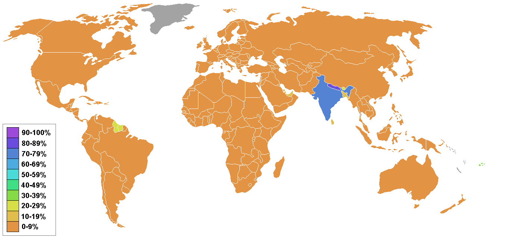

Verbreitung des Hinduismus
Hauptregionen
-
Indien: Der Hinduismus ist die Hauptreligion Indiens, mit über 80 % der Bevölkerung, die sich zu dieser Religion bekennt. Besonders stark ist der Hinduismus im Norden und Westen des Landes, wo zahlreiche Tempel und heilige Stätten liegen.
-
Nepal: Nepal ist das einzige Land der Welt, in dem der Hinduismus offiziell als Staatsreligion anerkannt ist. Etwa 80 % der nepalesischen Bevölkerung praktizieren diese Religion. Wichtige Pilgerstätten wie der Pashupatinath-Tempel befinden sich hier.
-
Indonesien (Bali): Auf der Insel Bali, die ein Zentrum des Hinduismus außerhalb Indiens darstellt, praktiziert die Mehrheit der Bevölkerung eine einzigartige Form des Hinduismus, die stark von der lokalen Kultur geprägt ist.
Minderheitenregionen
-
Bangladesch und Pakistan: In diesen Ländern leben hinduistische Minderheiten, die trotz historischer und sozialer Herausforderungen ihre Religion bewahrt haben. Wichtige Feste wie Durga Puja werden auch dort gefeiert.
-
Fidschi, Trinidad und Tobago: Der Hinduismus wurde in diese Regionen durch die Migration von indischen Arbeitern während der Kolonialzeit eingeführt. Bis heute ist er ein wichtiger Bestandteil der kulturellen Vielfalt dieser Länder.
Weltweite Verbreitung
-
Weltweit: Durch die indische Diaspora hat sich der Hinduismus in viele westliche Länder verbreitet. Zudem haben Yoga und Meditation als zentrale Elemente der hinduistischen Spiritualität weltweit an Beliebtheit gewonnen und tragen zur Anerkennung dieser Religion bei.
Heute gibt es weltweit ungefähr 880 Millionen Anhänger der Hinduismus. Die meisten von ihnen, etwa 800 Millionen, leben in Indien.

Zurück zum Hauptmenü